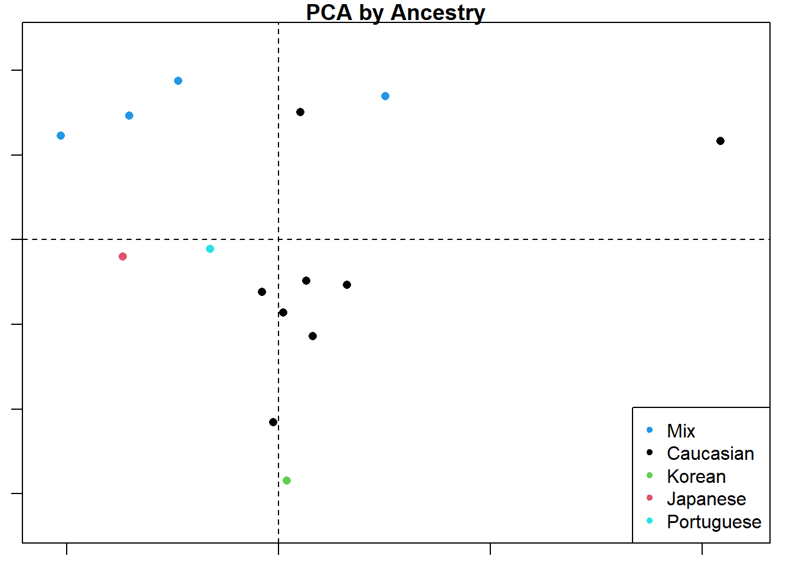

require(geomorph) #for GM analysis
require(SlicerMorphR) #for importing Slicer data
require(plyr) #for wireframe specs
require(dplyr) #for data processing/cleaning
require(tidyr) #for data processing/cleaning
require(skimr) #for nice visualization of data
require(knitr) #for qmd building
require(gapminder) #for plot aestheticsAnalysis
Workflow
Data Analysis in R Workflow
Purpose and Design
This page is still in progress. From the data obtained via SlicerMorph and the step described on the processing page, I am running ANOVA and PCA analyses. Running the statistics and understanding the superficial insights is pretty straightforward. Some of the more detailed analysis, however, still need to be worked out.
This markdown file utilizes codechunks.
Load needed packages
Importing Data
The files used in this analysis were produced in the processing code (SLprocess.r) illustrated in the Data Processing page on this website. The files listed below represent only the material thus far used. More data may be added as this project continues.
data_location1 <- "Data/Processed_data/output.rds"
d1 <- readRDS(data_location1)
data_location2 <- "Data/Processed_data/Coords.rds"
Coords <- readRDS(data_location2)
data_location3 <- "Data/Processed_data/gpa.rds"
d1array.gpa <- readRDS(data_location3)
data_location4 <- "Data/Processed_data/SMlog.rds"
SMlog <- readRDS(data_location4)
data_location5 <- "Data/Processed_data/PD.rds"
PD <- readRDS(data_location5)
###Work in progress#### 
PCA
The primary statistical approach first applied is a Principal Components Analysis. The next three plots below illustrate the initial results of PC1 by PC2, followed by color coded modifiers to visualize how the plotted variation relates to the sample demographics.
par(mar=c(1,1,1,1))
d1.pca<-gm.prcomp(d1array.gpa$coords)
d1.pca
Ordination type: Principal Component Analysis
Centering by OLS mean
Orthogonal projection of OLS residuals
Number of observations: 15
Number of vectors 14
Importance of Components:
Comp1 Comp2 Comp3 Comp4
Eigenvalues 0.001284241 0.0008394793 0.0007064908 0.0004946383
Proportion of Variance 0.231890428 0.1515815806 0.1275683414 0.0893149409
Cumulative Proportion 0.231890428 0.3834720082 0.5110403496 0.6003552905
Comp5 Comp6 Comp7 Comp8
Eigenvalues 0.0004420162 0.0003562317 0.0002984485 0.0002513745
Proportion of Variance 0.0798131715 0.0643233985 0.0538897120 0.0453897296
Cumulative Proportion 0.6801684621 0.7444918605 0.7983815725 0.8437713021
Comp9 Comp10 Comp11 Comp12
Eigenvalues 0.0002313215 0.0001697308 0.0001513341 0.0001270698
Proportion of Variance 0.0417688424 0.0306476375 0.0273258209 0.0229445070
Cumulative Proportion 0.8855401445 0.9161877820 0.9435136029 0.9664581099
Comp13 Comp14
Eigenvalues 0.0001010387 8.472084e-05
Proportion of Variance 0.0182441710 1.529772e-02
Cumulative Proportion 0.9847022809 1.000000e+00plot(d1.pca)
SlicerMorph.MS <- read.table(file = paste(SMlog$output.path,
SMlog$MeanShape,
sep="/"),
sep=",", header = TRUE, row.names=1)
plot(d1.pca, main = "PCA by Sex",
col=d1$Sex,
pch=16
)
legend("bottomright", pch = 20, col=unique(d1$Sex), legend = unique(d1$Sex))
plot(d1.pca, main = "PCA by Ancestry",
col=d1$Ancestry,
pch=16)
legend("bottomright", pch = 20, col=unique(d1$Ancestry), legend = unique(d1$Ancestry))
The collage below shows the original PC1 by PC2 compared with analyses by three different planes. Unsurprisingly, the original analysis shows the most variation and the strongest clustering by ancestry. This collage also labels the PC axes for me which I haven’t figured out how do yet for the larger plots. Everything is still a work in progress.
par(mfrow= c(2,2))
plot(d1.pca, main = "PCA",
col=d1$Ancestry,
pch=16)
legend("topright", pch = 20, col=unique(d1$Ancestry), legend = unique(d1$Ancestry))
plot(d1.pca, main = "PCA",
axis1=1, axis2=3,
col=d1$Ancestry,
pch=16
)
legend("topright", pch = 20, col=unique(d1$Ancestry), legend = unique(d1$Ancestry))
plot(d1.pca, main = "PCA",
axis1=2, axis2=3,
col=d1$Ancestry,
pch=16
)
legend("topright", pch = 20, col=unique(d1$Ancestry), legend = unique(d1$Ancestry))
plot(d1.pca, main = "PCA",
axis1=3, axis2=4,
col=d1$Ancestry,
pch=16
)
legend("topright", pch = 20, col=unique(d1$Ancestry), legend = unique(d1$Ancestry))gdf <- geomorph.data.frame(PD,
Ancestry = d1$Ancestry,
Sex = d1$Sex,
Csize = d1$centeroid)
attributes(gdf)$names
[1] "" "Ancestry" "Sex" "Csize"
$class
[1] "geomorph.data.frame"lm.fit <- procD.lm(Coords~Ancestry*Sex, data=gdf)
Warning: Because variables in the linear model are redundant,
the linear model design has been truncated (via QR decomposition).
Original X columns: 10
Final X columns (rank): 7
Check coefficients or degrees of freedom in ANOVA to see changes.summary(lm.fit)
Analysis of Variance, using Residual Randomization
Permutation procedure: Randomization of null model residuals
Number of permutations: 1000
Estimation method: Ordinary Least Squares
Sums of Squares and Cross-products: Type I
Effect sizes (Z) based on F distributions
Df SS MS Rsq F Z Pr(>F)
Ancestry 4 0.0090834 0.0022709 0.37550 1.5073 1.63054 0.056 .
Sex 1 0.0019193 0.0019193 0.07934 1.2739 0.69194 0.234
Ancestry:Sex 1 0.0011348 0.0011348 0.04691 0.7532 -0.46291 0.675
Residuals 8 0.0120528 0.0015066 0.49825
Total 14 0.0241903
---
Signif. codes: 0 '***' 0.001 '**' 0.01 '*' 0.05 '.' 0.1 ' ' 1
Call: procD.lm(f1 = Coords ~ Ancestry * Sex, data = gdf)plot(lm.fit)
anova(procD.lm(Coords~Csize + Ancestry*Sex, data=gdf))
Warning: Because variables in the linear model are redundant,
the linear model design has been truncated (via QR decomposition).
Original X columns: 11
Final X columns (rank): 8
Check coefficients or degrees of freedom in ANOVA to see changes.
Analysis of Variance, using Residual Randomization
Permutation procedure: Randomization of null model residuals
Number of permutations: 1000
Estimation method: Ordinary Least Squares
Sums of Squares and Cross-products: Type I
Effect sizes (Z) based on F distributions
Df SS MS Rsq F Z Pr(>F)
Csize 1 0.0034837 0.0034837 0.14401 2.5410 2.97834 0.001 **
Ancestry 4 0.0082665 0.0020666 0.34173 1.5074 1.49535 0.079 .
Sex 1 0.0018098 0.0018098 0.07481 1.3200 0.70917 0.247
Ancestry:Sex 1 0.0010333 0.0010333 0.04272 0.7537 -0.43578 0.658
Residuals 7 0.0095969 0.0013710 0.39673
Total 14 0.0241903
---
Signif. codes: 0 '***' 0.001 '**' 0.01 '*' 0.05 '.' 0.1 ' ' 1
Call: procD.lm(f1 = Coords ~ Csize + Ancestry * Sex, data = gdf)